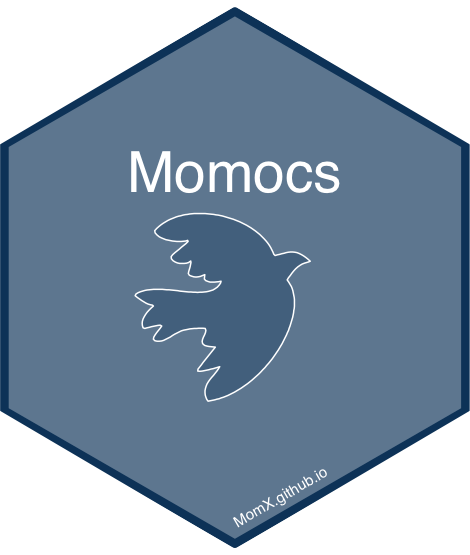

Momocs 2.0 
This repository is for developping Momocs 2.0
Along the course of years, its development has known several phases so did my ability to do basic and cool stuff in R. Now it’s time for a big cleanup of this tentacular package that became really painful to maintain.
I plan a release to CRAN in June 2020 or before. If you don’t like it, I’ll keep the last version (1.3.0) available but it will not be maintained in any way.
All suggestions, help, etc. are welcome, ring my bell: bonhomme.vincent@gmail.com.
Big changes going on
- Overall, embrace tidy manifesto
- Momocs is now restricted to manipulating shapes and describing them into coefficients. Import function will be entirely rewritten and part of
Momit. Statistical tools will be part ofMomstats. This will allow a much easier maintenance. Also development on top of Momocs will be a piece of cake. More packages are on their way and I’ll verse them progressively into MomX. - All objects are now tibbles, and Momocs is thus tidyverse ready.
dplyr,purrrandggplot2and other tidyverse packages are your new friends. You’re worth it and you will rock it. - Former S3 classes
CooandCoespirit is still around but they are turned into columns, as lists of shapes and lists of coordinates. Overall Momocs is more open-minded about what is a shape. - All graphs have been rewritten, a curated list of interesting datasets.
- Help pages have been rewritten and examples are now more interesting.
- Vignettes and companion websites.
- Test coverage is now decent.
- Overall, the code is more concise, consistent, commented. And yet this is the most dramatic change, it is mostly internal. For instance, this still works like a charm:
bot %T>% panel %>% efourier %T>% boxplot %>% PCA %>% plot.
Smaller changes
-
coo_ended up doing very different things: modifying shapes (egcoo_center), describing shapes (egcoo_centpos), testing shapes (egcoo_likely_clockwise) and even plotting (egcoo_ruban). This was very confusing.-
coo_is now reserved for shape modifyers (egcoo_center) -
get_is now for shape descriptors (egget_area) - other functions have more sensible names (eg
plot_ruban)
-